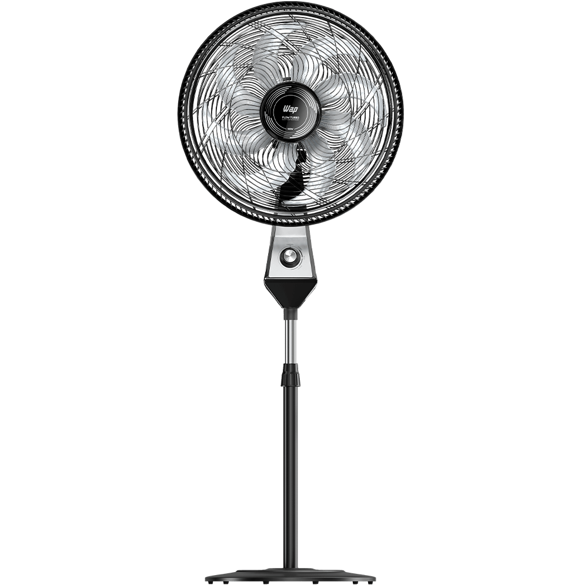

Listas
Lista não ordenada
- Ventilador
- mochila
- Televisão
- LCD
- LED
Lista ordenada
- Ventilador
- mochila
- Televisão
Lista de descrição
- Ventilador
- Ventilador ou Ventoinha é um dispositivo mecânico utilizado para converter energia mecânica de rotação, aplicada em seus eixos, em aumento de pressão do ar.
- 
- Mochila
- Uma mochila é, em sua forma mais simples, um saco de lona ou tecido sintético resistente que é carregado nas costas de uma pessoa, e apoiada através de quatro alças que passam por cima dos ombros.
- Televisão
- Televisor, também chamado televisão, é um sistema eletrônico de reprodução audiovisual de forma instantânea
Se Quiser saber mais sobre Jujutsu Kaisen leia:
Ou leia a matéria original: